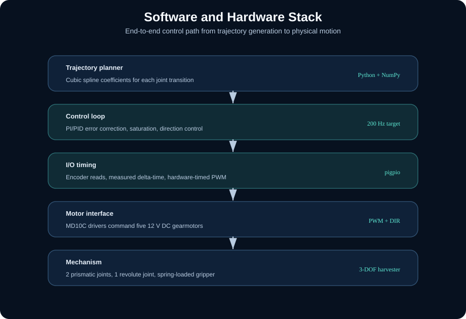
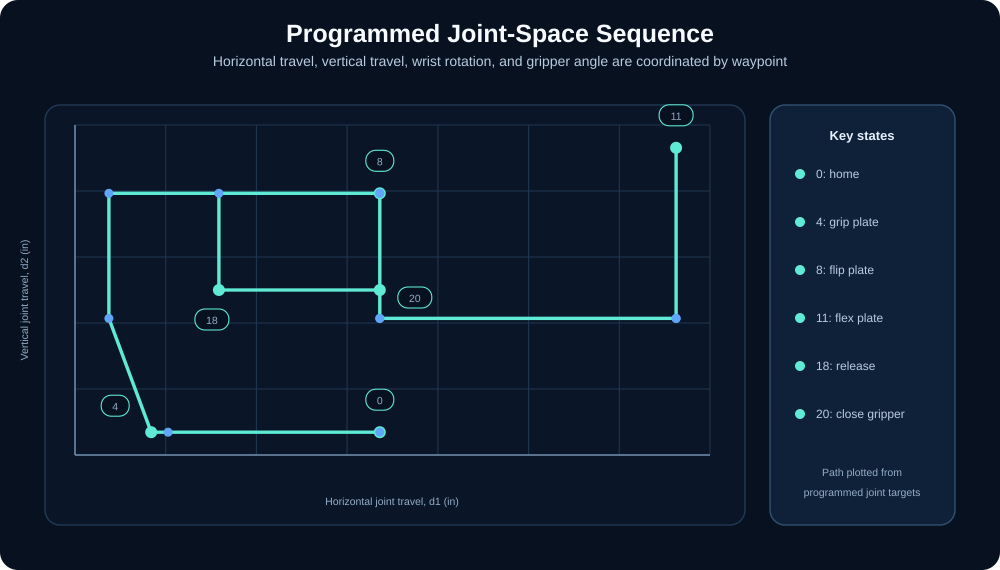
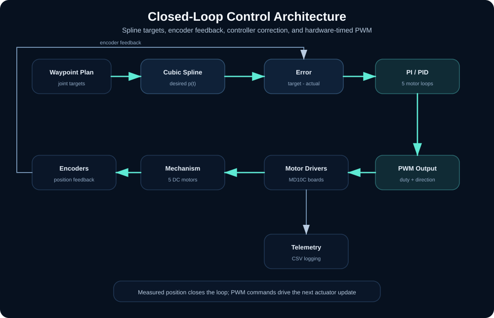
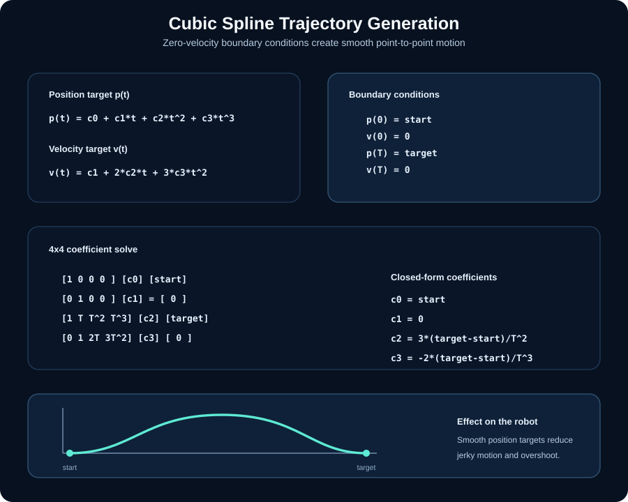
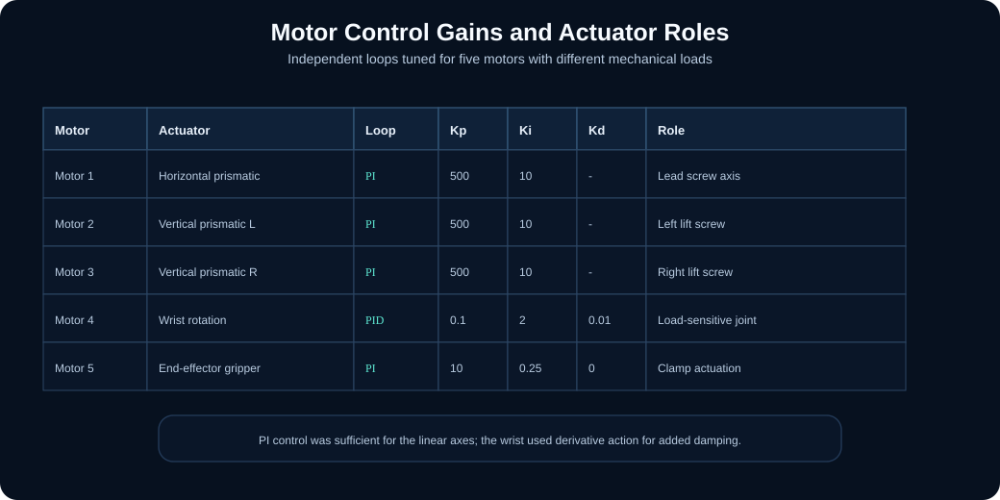

Problem
Finished prints often sit on printers until a person removes them, creating downtime and limiting continuous printer operation.
I built the embedded control software for a 5-motor robotic harvester that removes, flips, flexes, and replaces a 3D printer build plate. The system combines cubic spline trajectory generation, encoder feedback, per-motor PI/PID control, telemetry logging, and hardware-timed PWM to turn a low-cost prototype into a repeatable manipulation system.
A low-cost prototype for automating one of the most manual steps in 3D printing: unloading the finished build plate.
Finished prints often sit on printers until a person removes them, creating downtime and limiting continuous printer operation.
A fixed 3-DOF mechanism that grips the build plate, lifts it from the printer, rotates it, flexes it in a fixture, and returns it for the next print cycle.
The prototype executed a repeatable multi-step harvesting sequence using closed-loop motor control and logged telemetry for post-run analysis.

Prototype layout with the 3D printer on the left, the harvester in the center, and the print-removal fixture on the right.
The harvester combines a simple mechanical architecture with a complete software-to-actuator control stack.

The robot performed a staged manipulation task rather than isolated motor tests: grip, lift, rotate, flex, release, and return.

The core engineering loop maps a desired waypoint into real motor commands and verifies the result with encoder feedback.



def GimmeCoeff(start, end, tf):
IC = np.array([start, 0, end, 0])
A = np.array([
[1, 0, 0, 0],
[0, 1, 0, 0],
[1, tf, tf**2, tf**3],
[0, 1, 2*tf, 3*tf**2]
])
return np.linalg.solve(A, IC)
def TargetDist(t, coeff):
return coeff[0] + coeff[1]*t + coeff[2]*t**2 + coeff[3]*t**3Implementation detail: each waypoint transition gets new spline coefficients. During the motor loop, the controller evaluates the desired position, compares it to encoder-derived position, and converts the tracking error into a PWM duty cycle.
This kept the robot motion smoother than step commands or linear interpolation while preserving a simple implementation that ran on the Raspberry Pi.
The strongest lesson from the project was recognizing when instability came from timing, not just control gains.
Initial software-timed PWM produced inconsistent timing on a general-purpose operating system. Moving PWM generation to pigpio hardware-timed output made actuation timing more deterministic.

The desired and actual joint trajectories closely follow one another across the task sequence, demonstrating that the feedback loops tracked the generated splines on physical hardware.
Because the Raspberry Pi is not a real-time controller, the script measured elapsed time at each encoder read instead of assuming a perfect fixed sample period.
I would move hard real-time motor control to an STM32 or RTOS-based controller, keep the Pi for planning and UI, add homing switches, and implement a more explicit safety state machine.
Full robot demonstration showing the coordinated multi-step harvesting sequence.
Selected images from the report show the mechanical layout, electronics integration, and validation work behind the control system.


Open selected report pages or extracted slide images directly in the browser without leaving the case study.
The prototype proved the core motion sequence. The next version would focus on robustness, safety, and deployability.
Add homing switches and hard travel limits for repeatable startup.
Move motor timing to a microcontroller with deterministic control loops.
Separate high-level sequencing from low-level motor control.
Add fault detection for stalled motors, missed encoder counts, and unsafe positions.
Package the system as a safer printer-farm automation cell.